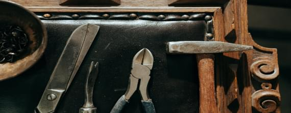

<!--#set var="title" value="Antic Valeri" -->
<!--#include virtual="/parts/header-2.html" -->

<section class="s-page s-additional-services">
	<div class="container">

		<nav class="breadcrumbs">
			<ul>
				<li><a href="#">Hogar</a></li>
				<li>Servicios adicionales</li>
			</ul>
		</nav>

		<div class="page-title">
			<h1 class="h2">Inventariado, restauración y máxima tasación</h1>
		</div>
		
		<div class="additional-services">
			
			<div class="additional-services-info">
				
				<div class="h4">¿Interesado en vender antigüedades?</div>
				
				<p>En Antigüedades Bernabeu somos especialistas en la valoración de todo tipo de piezas de coleccionismo y antigüedades. Nos desplazamos hasta su domicilio para inventariar y tasar los ítems que desee vender, ofreciendo la máxima tasación posible</p>
				
			</div>
			
			<div class="additional-services-list">
				
				<div class="additional-service">
					
					<div class="additional-service-img">
						<div class="h4">Compra de antigüedades y coleccionismo</div>
						
					</div>
					
					<div class="additional-service-text">
						<div class="h4">Compra de antigüedades y coleccionismo</div>
						<p>Si está interesado en la venta de los objetos antiguos que hay en su casa, contacte con nosotros y acudiremos a su domicilio. Realizaremos un inventario y una valoración de todo el contenido</p>
					</div>
					
				</div>

				<div class="additional-service">

					<div class="additional-service-img">
						<div class="h4">Tasación de antigüedades y obras de arte</div>
						
					</div>

					<div class="additional-service-text">
						<div class="h4">Tasación de antigüedades y obras de arte</div>
						<p>¿Está interesado en vender antigüedades? ¿En su casa hay muebles, enseres, cubertería, piezas de coleccionista, cuadros antiguos y obras de arte? ¿No sabe qué hacer con los juguetes de su infancia? Realizamos inventarios y tasaciones para reparto de bienes, para testamentos y herencias, seguros, valoración para posible venta, etc. </p>
					</div>

				</div>

				<div class="additional-service">

					<div class="additional-service-img">
						<div class="h4">Restauración de antigüedades</div>
						
					</div>

					<div class="additional-service-text">
						<div class="h4">Restauración de antigüedades</div>
						<p>Le ofrecemos un servicio de restauración de arte y antigüedades. Realizamos un estudio y diagnóstico de la obra, elaborando un informe de todo el proceso de restauración, detallado con fotografías del antes y después.</p>
					</div>

				</div>
				
			</div>
			
		</div>
		
	</div>
</section>


<!--#include virtual="/parts/footer.html" -->